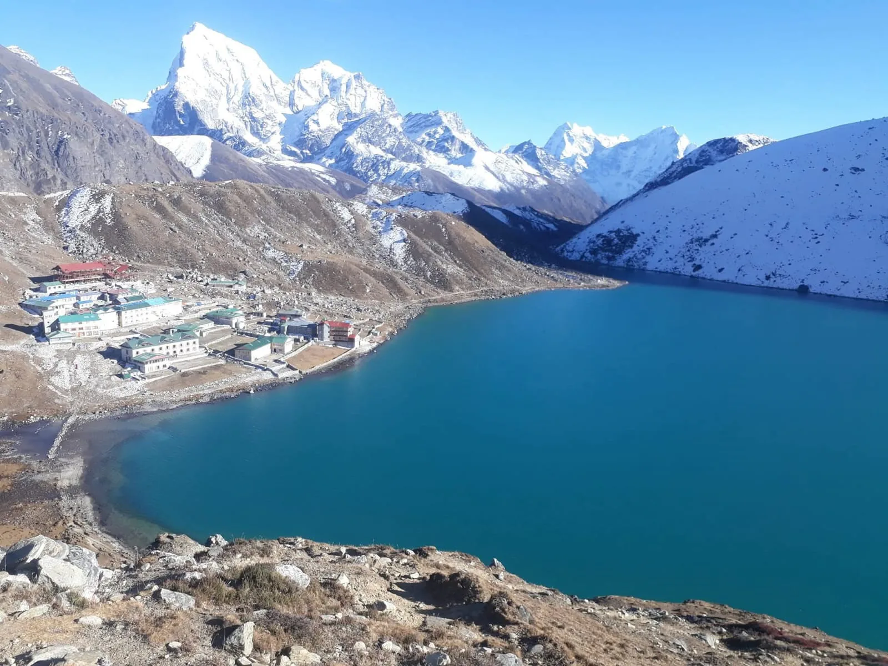
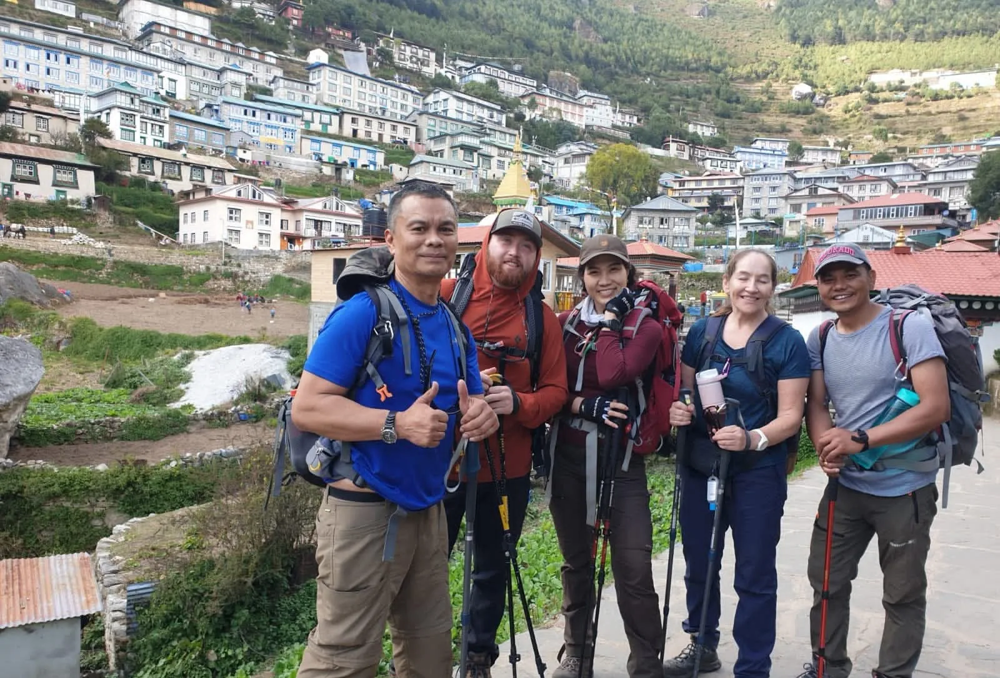
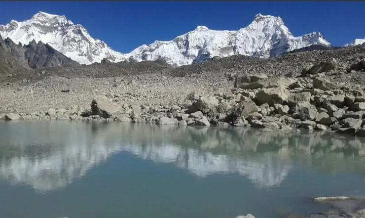
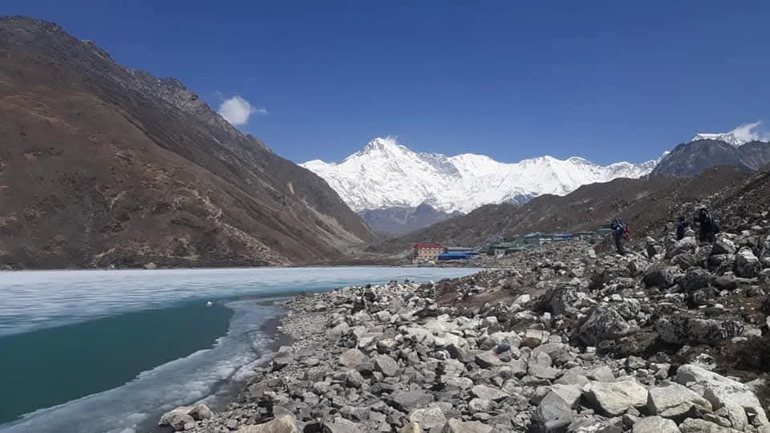
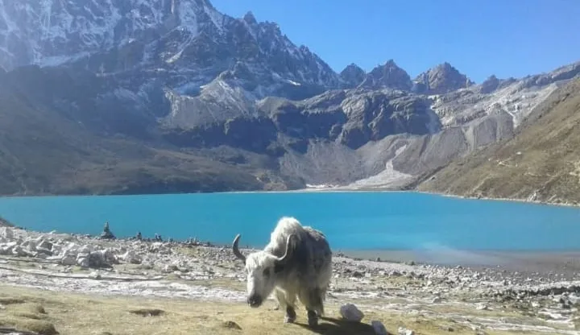
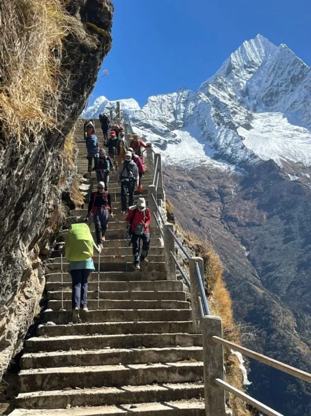
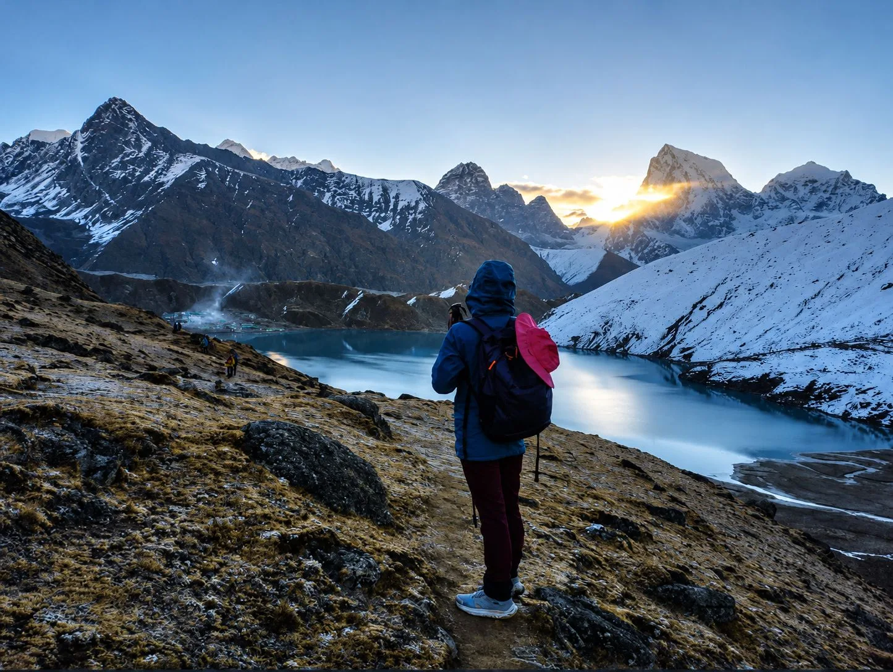

1. Seasonal Windows Overview: The Golden Trekking Periods for Gokyo Lakes
The Gokyo Valley sits at extreme altitude inside Sagarmatha National Park, with permanent settlements situated between 3,440 m (Namche) and 4,790 m (Gokyo village), culminating in the 5,357-meter summit of Gokyo Ri. At these altitudes, weather dictates not only your comfort and view quality but also trail safety, Lukla flight operations, and high-pass accessibility.
Nepal’s Himalayan climate is divided into four distinct seasons, each offering a fundamentally different trekking experience:

| Season | Calendar Months | Day / Night Temp at Gokyo (4,790 m) | Lake Condition | Overall Rating |
|---|---|---|---|---|
| Autumn (Peak) | Late Sept – Nov | 8°C to 14°C / -5°C to -15°C | Vibrant turquoise, 100% liquid | ★★★★★ (Best Overall) |
| Spring (Prime) | March – May | 6°C to 12°C / -2°C to -10°C | Thawing ice to deep turquoise (late April) | ★★★★☆ (Warm & Flora) |
| Winter (Cold / Solitude) | Dec – Feb | -2°C to 5°C / -15°C to -25°C | 100% frozen solid with white ice sheets | ★★★☆☆ (Rugged & Quiet) |
| Monsoon (Wet / Low) | June – Early Sept | 10°C to 16°C / 2°C to 6°C | Liquid, surrounded by lush green moss | ★★☆☆☆ (High Rain / Leeches) |
2. Autumn Peak Season (October & November): Crystal Skies, Turquoise Waters & Crisp Air
October and November are universally acknowledged by Sherpa guides and veteran mountaineers as the finest months of the year to trek to Gokyo Lakes. By the first week of October, the summer monsoon has retreated southward over the Bay of Bengal, leaving behind pristine, washed-clean mountain air with virtually zero airborne dust or humidity.
Why Autumn is Superior for Gokyo:
- Deep Turquoise Water Color: The six sacred lakes are filled to maximum capacity by summer glacial melt and reflect an astonishing, unblemished cobalt and turquoise hue against dry golden moraines.
- Crystal Mountain Visibility: Days are characterized by stable high-pressure systems. From 6:00 AM until late afternoon, panoramic vistas of Mount Everest, Lhotse, Makalu, and Cho Oyu remain razor sharp without thermal cloud buildup.
- High Pass Viability: Cho La Pass (5,420 m) and Renjo La Pass (5,360 m) are clear of deep avalanche-prone winter snowpacks, making circuits and connections to Everest Base Camp reliable.
- Lukla Flight Stability: Clear morning skies minimize flight delays between Kathmandu/Ramechhap and Lukla.

3. Spring Climbing Season (March, April & May): Rhododendron Blooms & Mild Alpine Sun
Spring is the second premier window, bringing increasing warmth, longer daylight hours, and the buzz of international mountaineering expeditions heading to the Khumbu for summit bids on Everest, Lhotse, and Cho Oyu.
Spring Progression:
- March: The valley is still emerging from winter. Gokyo Lakes are usually frozen under thick sheets of white and cerulean ice. Teahouse temperatures remain cold, but daytime sunshine begins to soften trails. Trails are quiet and uncrowded.
- April: The sweet spot of spring. The lower valleys from Lukla through Phakding and Namche to Dole explode with blooming pink, scarlet, and white rhododendrons and magnolia trees. The ice sheets on the Third Lake begin their dramatic spring breakup.
- May: The warmest month before the monsoon. Day temperatures at Gokyo reach a comfortable 12°C. All lakes are completely thawed. However, afternoon pre-monsoon cloud buildup occurs more frequently than in autumn, making early-morning starts essential for peak views.

4. Month-by-Month Temperature, Precipitation & Daylight Hours Matrix
Here is an empirical, meteorological breakdown of temperatures, precipitation, and sunshine hours recorded at Gokyo village (4,790 m / 15,715 ft):
| Month | Avg Max Temp | Avg Min Temp | Rain / Snowfall | Sunny Days | Wind Speed (Gokyo Ri) |
|---|---|---|---|---|---|
| January | -2°C (28°F) | -22°C (-8°F) | 12 mm (Snow) | 24 days | 35 – 55 km/h |
| February | 0°C (32°F) | -19°C (-2°F) | 18 mm (Snow) | 22 days | 30 – 50 km/h |
| March | 4°C (39°F) | -14°C (7°F) | 25 mm (Mixed) | 23 days | 25 – 40 km/h |
| April | 8°C (46°F) | -8°C (18°F) | 32 mm (Rain/Snow) | 22 days | 20 – 35 km/h |
| May | 12°C (54°F) | -2°C (28°F) | 58 mm (Rain) | 19 days | 15 – 30 km/h |
| June | 14°C (57°F) | 3°C (37°F) | 145 mm (Rain) | 11 days | 15 – 25 km/h |
| July | 15°C (59°F) | 5°C (41°F) | 210 mm (Heavy Rain) | 7 days | 10 – 20 km/h |
| August | 14°C (57°F) | 4°C (39°F) | 195 mm (Heavy Rain) | 9 days | 10 – 20 km/h |
| September | 12°C (54°F) | 0°C (32°F) | 85 mm (Clearing) | 18 days | 15 – 25 km/h |
| October | 9°C (48°F) | -6°C (21°F) | 22 mm (Dry) | 27 days | 15 – 30 km/h |
| November | 5°C (41°F) | -12°C (10°F) | 10 mm (Dry) | 28 days | 20 – 40 km/h |
| December | 1°C (34°F) | -18°C (0°F) | 8 mm (Snow) | 26 days | 30 – 50 km/h |
5. Winter Expedition Window (December to February): Frozen Lakes, Solitude & Arctic Cold
Trekking to Gokyo Lakes in the heart of winter is an unforgettable, raw Himalayan adventure suited for self-reliant trekkers who prioritize complete trail solitude over warm lodge evenings.
The Winter Reality:
- The Frozen Wonder: By mid-December, all six Gokyo lakes freeze solid under deep sheets of translucent and snow-dusted ice. The sight of frozen Dudh Pokhari beneath snow-capped Himalayan massifs is visually surreal.
- Sub-Zero Teahouse Conditions: Teahouses have unheated bedrooms where indoor temperatures drop between -10°C and -20°C at night. Water pipes freeze solid, meaning flush toilets cease operating and hot bucket showers are non-existent above Namche.
- Lodge Closures: Approximately 60% of teahouse owners in Dole, Machhermo, and Gokyo close their properties and migrate down to Kathmandu for winter. Only 1 or 2 lodges remain open in Gokyo village.
- Pass Closures: Cho La and Renjo La passes are frequently blocked by heavy snowfall and bulletproof blue ice, rendering them impassable without full technical mountaineering gear.

6. Monsoon Summer Months (June to August): Cloud Cover, Leeches & Landslide Risks
We generally advise against trekking to Gokyo Lakes between June and August unless your travel dates are strictly inflexible. The South Asian summer monsoon channels warm, moisture-laden air directly from the Indian Ocean against the sheer barriers of the Himalayan range.
Monsoon Hazards:
- Persistent Cloud Cover: Heavy stratus cloud banks envelop the valley almost 24/7. Trekkers can hike for ten consecutive days without seeing Mount Everest or Cho Oyu.
- Lukla Flight Stranding: Dense low-hanging cloud ceilings in the Dudh Koshi canyon shut down Lukla airport for days or even weeks at a time, resulting in massive travel disruptions.
- Leeches & Slippery Trails: Forest sections below Dole (between Phakding, Namche, and Phortse) teem with active terrestrial leeches. Trails turn to slick, mud-slicked trenches.
- Landslide Hazards: Heavy rain triggers rockfalls and slope failures, particularly along the steep moraine contours between Machhermo and Pangka.
7. The Lake Thaw Cycle: When Are the Gokyo Lakes Completely Frozen vs Vibrant Turquoise?
One of the most frequent questions from photographers and trekkers is: "When will the lakes be turquoise rather than frozen white?"
Because the lakes sit at an elevation of nearly 4,800 meters, their physical state changes dynamically across the annual seasonal calendar:

- Mid-December to Late March (100% Frozen): Lakes are covered in a solid shell of thick ice and windblown snow. You can walk across near-shore ice shelves safely (though venturing onto deep lake centers is strictly discouraged).
- Early April to Mid-April (The Breakup): Warming spring sunshine creates fractures in the ice sheet. Giant turquoise slabs of floating ice drift across deep blue water, offering extraordinary abstract photo compositions.
- Late April to Mid-November (Liquid Turquoise): Completely thawed. Glacial rock flour (ultra-fine silt suspended in meltwater) refracts sunlight, giving the lakes their world-famous glowing turquoise, sapphire, and emerald luminescence.
8. Gokyo Ri Summit Visibility: Cloud Patterns, Afternoon Mist & Jet Stream Winds
Climbing Gokyo Ri (5,357 m) is the climactic objective of the trek. However, timing your ascent according to diurnal micro-weather patterns is critical to securing the legendary 360-degree panorama.
The Diurnal Valley Cycle:
- Dawn (5:00 AM – 8:30 AM): Katabatic night winds subside, leaving completely calm, crystal-clear skies. Temperatures are freezing (-8°C to -16°C), but visibility extends over 100 miles into Tibet and eastward to Kangchenjunga.
- Late Morning (10:00 AM – 1:00 PM): Solar radiation warms the lower valley floor around Phakding and Lukla. Moisture begins to evaporate, generating thermal updrafts (anabatic winds) that push cumulus cloud fingers up the river gorge.
- Afternoon (2:00 PM – 5:30 PM): Cloud condensation frequently covers the Gokyo basin in thick mist, dropping temperatures sharply and obscuring mountain summits.
While 90% of trekkers climb Gokyo Ri for sunrise, late-afternoon climbs during stable autumn high-pressure days (mid-October) offer arguably superior photography. The late afternoon sun illuminates the massive western and southern faces of Everest, Lhotse, and Nuptse in warm alpenglow gold, with fewer summit crowds.
9. Crossing High Mountain Passes (Cho La & Renjo La): Seasonal Ice, Snow & Avalanche Windows
If you plan to link Gokyo with Everest Base Camp via Cho La Pass (5,420 m) or loop through Thame via Renjo La Pass (5,360 m), seasonal weather windows become a life-or-death consideration.
| Month | Cho La Pass Status | Renjo La Pass Status | Required Equipment |
|---|---|---|---|
| Jan – Feb | Extremely High Risk / Often Impassable | High Risk / Deep Wind-Drift Snow | Crampons, ice axe, mountaineering boots |
| March | Passable with Caution | Passable with Caution | Microspikes, gaiters, poles |
| April – May | Optimal Condition | Optimal Condition | Microspikes, trekking poles |
| June – Aug | Wet / Rockfall Hazard / Hidden Crevasses | Slippery Scree / Poor Visibility | Rain gear, sturdy boots |
| Sept – Nov | Prime Window (Clean Glacier) | Prime Window (Dry Steps) | Microspikes for morning summit ice |
| December | Freezing Blue Ice / Early Season Snow | High Wind / Very Cold | Microspikes, extreme cold layers |

10. Trail Crowds & Teahouse Availability: Peak Rush vs Peaceful Shoulder Weeks
Even though the Gokyo Valley receives less than one-third of the tourist traffic seen on the main Everest Base Camp highway, teahouse capacity in upper villages like Machhermo and Gokyo is limited (fewer than 8 total lodges in Gokyo village).
- Peak Density (Oct 10 – Nov 15 & April 1 – May 10): Lodges operate at 100% capacity. Independent trekkers without a pre-booking guide often find themselves sleeping on dining room benches or sharing rooms. Pre-booking via an agency is virtually mandatory.
- Shoulder Sweet Spots (Late September & Late November): Late September sees rapidly clearing monsoon skies with empty lodges. Late November offers sparkling, sub-zero days with warm, quiet dining rooms and zero wait times for hot food.
- Off-Peak Solitude (December to February): You will encounter only a handful of international trekkers per day. Lodges that remain open will treat you like family.
11. Lukla Flight Reliability Across Seasons: Weather Cancellations & Buffer Day Planning
Flights into Lukla’s short mountain runway rely entirely on visual flight rules (VFR). Pilots must see the runway clearly through mountain passes; GPS or instrument landings are impossible.
Seasonal Disruption Risk:
- Autumn (Low Disruption, 5%–10% delay risk): High-pressure systems ensure morning flights operate on time nearly every day.
- Spring (Moderate Disruption, 15%–25% delay risk): Afternoon haze and valley wind shear occasionally delay late morning rotations.
- Monsoon (Severe Disruption, 60%–80% cancellation rate): Days-long groundings are standard. Helicopter sharing becomes the only reliable exit.
- Winter (Low Cloud Disruption, High Freeze Risk): Runways occasionally suffer morning frost or light snowfall delays.
Always schedule at least 1 to 2 buffer days in Kathmandu at the end of your trekking itinerary before your international departure flight home. A single foggy morning in Lukla can otherwise cause missed overseas connections and thousands of dollars in rebooking fees.
12. Seasonal Gear Tweaks: Layering for -20°C Winter Nights vs Spring Sun Protection
Your gear list must adapt specifically to the month you choose:
- Autumn Checklist: Medium down jacket (700-fill), -15°C sleeping bag, light fleece gloves, UV 400 sunglasses, and mid-weight Merino wool base layers. Warm days require breathable sun hoodies.
- Spring Checklist: Add broad-spectrum SPF 50+ sunscreen, polarized alpine glacier glasses (Category 3 or 4 to prevent snow blindness on thawing lake ice), and insect repellent for lower rhododendron forests.
- Winter Checklist: Heavy -20°C to -25°C expedition sleeping bag, 800-fill heavyweight hooded down parka, insulated mittens, chemical hand warmers, neoprene face mask, and thermos water bottle covers to stop drinking water from freezing solid on the trail.

13. Cultural & Festival Timing: Experiencing Mani Rimdu in Autumn & Dumji in Summer
Timing your trek to coincide with sacred Sherpa Buddhist festivals adds profound cultural richness to your Himalayan journey:
- Mani Rimdu Festival (Late October or November): The most sacred festival in the Everest region, celebrated at Tengboche Monastery and Chiwong Monastery. Spanning 19 days of ritual and culminating in three days of public masked Cham dances by Buddhist monks, Mani Rimdu falls during the heart of peak autumn trekking season.
- Dumji Festival (May / June): Celebrated in Namche Bazaar, Thame, and Khumjung, commemorating the birth of Guru Rinpoche (Padmasambhava). Features community feasts, sacred dances, and family blessings.
14. Frequently Asked Questions: Best Time for Gokyo Lakes Trek
Get immediate, expert answers to the most frequently asked questions regarding seasons, weather, and timing for the Gokyo Lakes trek.

Ready to Experience the Himalayas?
Whether you are preparing for high-altitude trekking, cultural circuits, or alpine summit expeditions, start planning a bespoke journey tailored to your fitness, travel season, and style.